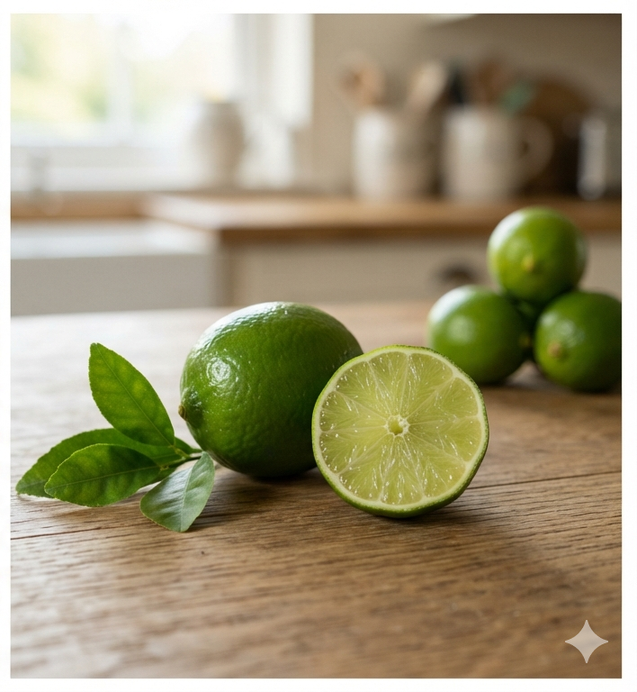

What is a Lime?

Limes comprise a diverse category of small, round, green citrus hybrids that thrive exceptionally well in hot, tropical climates. They are typically harvested while still green and underripe, which is when their signature acidity and zesty flavor profiles are at their absolute peak.
Key Characteristics
- Taste: Sharply acidic and tangy, featuring unique, bright herbal top notes.
- Peel: Thin, smooth, and tightly bound skin that changes from deep green to yellow when fully ripe.
- Ancestry: Complex hybrids often derived from combinations of papedas, citrons, and mandarins.
Popular Varieties
Limes vary considerably in size, skin texture, and seed count:
- Persian Lime: The common, seedless grocery store lime with a thick skin and crisp juice.
- Key Lime: A smaller, intensely aromatic variety with thin skin and a higher seed count.
- Finger Lime: An exotic variety containing caviar-like juice beads that pop in the mouth.
Cultural Significance
Limes are the ultimate cultural companion to street food, cocktails, and regional seasoning. They provide the necessary balance to rich meats in Mexican tacos, add depth to Vietnamese Pho, and act as a defining component in global beverages ranging from fresh limeades to classic mojitos.